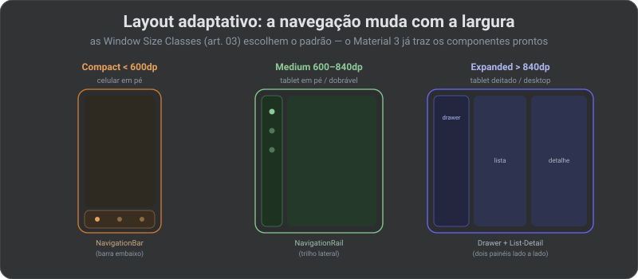

🧩 Material 3: o sistema de design do Android (2026)
No artigo anterior você aprendeu a mecânica do Compose — como emitir e recompor UI. Mas “funcionar” não é “parecer profissional”. O Material 3 (também chamado Material You) é a linguagem de design do Android: um sistema de cor, tipografia, forma, elevação, movimento e componentes prontos que fazem o app parecer nativo, coeso e — de graça — acessível. A ideia central é simples e poderosa: componentes não têm estilo próprio; eles perguntam ao tema. Você define o tema uma vez, e a marca inteira responde.
🔗 Fio condutor: o 06 · Compose deu os blocos; aqui você os veste com um sistema coerente. A grade de 8dp e o alvo de 48dp do 05 · Densidade voltam como regra de layout, e o 08 · Acessibilidade pega o bastão do contraste e do dynamic type.
Parte 1 · Os três pilares do tema
Um MaterialTheme envolve o app e expõe três coisas que todo componente lê: cor, tipografia e forma. Trocar qualquer uma muda o app inteiro sem tocar em cada tela.
![Os três pilares do MaterialTheme que todo componente lê. colorScheme: papéis em vez de cores fixas — primary e onPrimary, secondary, tertiary, surface e onSurface, error e onError; no Android 12+ o Dynamic Color gera a paleta a partir do papel de parede. typography: a escala tipográfica com papéis Display, Headline, Title, Body e Label, cada um com tamanho, peso e espaçamento definidos para consistência. shapes: cantos por tamanho de componente — small 4dp, medium 12dp, large 20dp — chips usam small, cards medium, bottom sheets large, mais elevação por tonal color. Um componente consome assim: Text com color igual a MaterialTheme.colorScheme.primary e style igual a MaterialTheme.typography.headlineMedium; nunca uma cor cravada como Color(0xFF6750A4) no componente, o que quebraria tema escuro, dynamic color e acessibilidade.](../assets/material-theming.svg)
Cor por papel, não por valor
O pulo do gato do Material 3: a cor tem papel semântico (primary, surface, error…), com um par de contraste automático (onPrimary é o que se lê sobre primary). Você nunca escreve um hexadecimal no componente — escreve o papel. Isso é o que faz tema claro/escuro e dynamic color funcionarem sem `if` espalhado.
// tema: definido UMA vez, na raiz do app
@Composable
fun NexusTheme(dark: Boolean = isSystemInDarkTheme(), content: @Composable () -> Unit) {
val cores = when {
// Dynamic Color: paleta tirada do papel de parede (Android 12+)
Build.VERSION.SDK_INT >= 31 && dark -> dynamicDarkColorScheme(LocalContext.current)
Build.VERSION.SDK_INT >= 31 -> dynamicLightColorScheme(LocalContext.current)
dark -> darkColorScheme(primary = NexusRoxo) // fallback da marca
else -> lightColorScheme(primary = NexusRoxo)
}
MaterialTheme(colorScheme = cores, typography = NexusType, shapes = NexusShapes, content = content)
}
🧠 Termo — Dynamic Color / Material You: a partir do Android 12, o sistema gera uma paleta harmônica a partir do papel de parede do usuário. Optar por ele deixa seu app “combinar” com o aparelho — mas mantenha um colorScheme da marca como fallback (Android < 12 e quando a identidade visual precisa mandar).
Parte 2 · Componentes: use os prontos
O Material 3 traz dezenas de componentes que já resolvem estado, acessibilidade e animação. A regra do especialista: não reinvente um botão ou um campo — componha os prontos e ajuste por Modifier e pelo tema.
| Precisa de | Componente M3 |
|---|---|
| Ação primária / secundária | Button, FilledTonalButton, OutlinedButton, TextButton |
| Estrutura da tela | Scaffold (topo + FAB + bottom bar + conteúdo) |
| Barra de topo | TopAppBar (e variantes large/center) |
| Entrada de texto | TextField, OutlinedTextField |
| Contêiner de conteúdo | Card, ListItem |
| Seleção / filtro | Chip, Switch, Checkbox, SegmentedButton |
| Feedback temporário | Snackbar (via SnackbarHost do Scaffold) |
@Composable
fun TelaNexus(vm: HomeViewModel) {
val estado by vm.state.collectAsStateWithLifecycle()
Scaffold( // estrutura padrão da tela
topBar = { TopAppBar(title = { Text("NexusHub") }) },
floatingActionButton = { FloatingActionButton(onClick = vm::novo) { Icon(Icons.Default.Add, null) } },
) { padding ->
LazyColumn(contentPadding = padding) { // respeita a barra de topo/FAB
items(estado.itens, key = { it.id }) { Card { ListItem(headlineContent = { Text(it.titulo) }) } }
}
}
}
⚠️ Pegadinha: o
Scaffoldte entrega umPaddingValuesnocontent. Aplique-o (comocontentPaddingouModifier.padding) — senão o conteúdo fica embaixo daTopAppBarou do sistema. É o elo com o edge-to-edge do artigo 04.
Parte 3 · Layout adaptativo: um app, várias telas
Desde o artigo 04, a Google exige que o app funcione em tela grande e não trave orientação. O Material 3 traz os componentes que se adaptam à Window Size Class: a navegação muda de forma conforme a largura.

| Largura | Navegação | Conteúdo |
|---|---|---|
| Compact (< 600dp) | NavigationBar (barra inferior) | uma coluna; lista OU detalhe |
| Medium (600–840dp) | NavigationRail (trilho lateral) | conteúdo mais largo, cards em grade |
| Expanded (> 840dp) | PermanentNavigationDrawer | List-Detail lado a lado |
🔒 Visão Specialist: não escreva esse
whenna mão. A bibliotecamaterial3-adaptivetrazNavigationSuiteScaffold(escolhe bar/rail/drawer sozinho) eListDetailPaneScaffold(gerencia os dois painéis e o “voltar” em telas pequenas). Você declara os destinos e o conteúdo; a biblioteca decide a forma pela largura. É o jeito 2026 de cumprir o mandato de telas grandes sem duplicar tela.
Parte 4 · Tema claro/escuro, elevação e movimento
- Claro/escuro sai de graça — porque você usou papéis de cor.
isSystemInDarkTheme()troca ocolorScheme; nenhum componente precisa saber. - Elevação por tonal color — no M3, “levantar” uma superfície a tinge com o
primaryem vez de só sombra. UsetonalElevation/Surface, não sombras manuais. - Movimento com propósito — transições curtas (
AnimatedVisibility,animate*AsState, transições de navegação compartilhadas) que explicam a mudança de estado. Movimento não é enfeite: orienta o olho.
⚠️ Pegadinha: respeite a preferência de reduzir movimento do sistema (acessibilidade). Animações longas ou paralaxe agressiva enjoam e prejudicam quem tem sensibilidade vestibular — encurte ou desligue quando o usuário pediu menos movimento.
Parte 5 · Tema customizado avançado
O Material 3 cobre o comum, mas toda marca acaba precisando de algo que não existe no sistema: uma cor semântica própria (um “sucesso” verde, um “aviso” âmbar), um espaçamento padrão da marca, uma tipografia extra. O jeito certo não é cravar valores nos componentes — é estender o tema com seus próprios tokens, expostos por um CompositionLocal, do mesmo jeito que o MaterialTheme expõe os dele.
// 1) Defina os tokens EXTRAS que o M3 não tem (cores semânticas da marca)
@Immutable
data class CoresNexus(val sucesso: Color, val aviso: Color, val onSucesso: Color)
// 2) Exponha por um CompositionLocal (mesma mecânica do MaterialTheme)
val LocalCoresNexus = staticCompositionLocalOf {
CoresNexus(Color.Unspecified, Color.Unspecified, Color.Unspecified)
}
// 3) Envolva o MaterialTheme e forneça também os seus tokens
@Composable
fun NexusTheme(dark: Boolean = isSystemInDarkTheme(), content: @Composable () -> Unit) {
val extras = if (dark) CoresNexus(Verde200, Ambar200, Verde900)
else CoresNexus(Verde600, Ambar600, Color.White)
CompositionLocalProvider(LocalCoresNexus provides extras) {
MaterialTheme(colorScheme = nexusColorScheme(dark), typography = NexusType, content = content)
}
}
// 4) Um "acessor" no estilo MaterialTheme.colorScheme — leitura limpa no componente
object NexusTheme { val cores: CoresNexus @Composable get() = LocalCoresNexus.current }
// uso: Text("Salvo!", color = NexusTheme.cores.sucesso) // troca sozinho no dark
🧠 Termo — design token: um nome semântico para um valor de design (
cor.sucesso,espaco.card), em vez do valor cru. Tokens deixam o time falar em intenção e trocar o valor num lugar só — é o que torna um tema escalável e o que ferramentas de design (Figma) exportam.
Componente customizado: herde, não reescreva
Quando um componente da marca não existe no M3, construa-o sobre as primitivas (Surface, ProvideTextStyle, ripple, Modifier.clickable) — assim você herda estados (pressed/disabled/focus), acessibilidade e ripple de graça, e só pinta a diferença.
@Composable
fun BotaoNexus(texto: String, onClick: () -> Unit, modifier: Modifier = Modifier) {
Surface( // Surface já dá tonal elevation + shape do tema
onClick = onClick, // e o clique acessível + ripple
shape = MaterialTheme.shapes.large,
color = NexusTheme.cores.sucesso,
modifier = modifier.heightIn(min = 48.dp), // alvo de toque (art. 08)
) { Box(Modifier.padding(16.dp), Alignment.Center) { Text(texto) } }
}
🔒 Visão Specialist: a linha entre “tematizar” e “brigar com o Material” é esta: estender por tokens e primitivas = barato e sustentável; recriar componentes do zero = caro e frágil. Se a marca exige um visual radicalmente fora do Material, ainda assim construa sobre
Surface/Modifiere a camada de foundation do Compose — você abre mão do look do M3, mas não da acessibilidade e dos estados que ele já resolve. ReescreverInteraction/foco na mão é onde apps “bonitos” viram inacessíveis.
Quando (não) usar
| Situação | Faça |
|---|---|
| Precisa de um botão/campo/card | componente M3 pronto + tema; não estilize do zero |
| Cor de um componente | MaterialTheme.colorScheme.X; nunca hexadecimal cravado |
| App precisa de tela grande | NavigationSuiteScaffold + ListDetailPaneScaffold |
| Marca forte exige cor própria | colorScheme da marca como fallback; dynamic color opcional |
| Identidade muito fora do Material | tema customizado é ok — mas herde acessibilidade e estados dos componentes base |
🔒 Visão Specialist: a tentação de “desenhar tudo do zero para fugir do cara-de-Material” quase sempre custa caro: você reescreve estados (pressed, disabled, focus), acessibilidade e animação que os componentes já resolvem. O caminho maduro é tematizar forte (cor, forma, tipografia da marca) mantendo os componentes base — 95% da identidade com 5% do risco.
✅ Checklist para o NexusHub
| Item | Ação |
|---|---|
| Tema único na raiz | MaterialTheme com colorScheme + typography + shapes da marca |
| Cor por papel | componentes leem colorScheme; zero hexadecimal cravado |
| Claro/escuro + dynamic color | isSystemInDarkTheme() + dynamic*ColorScheme com fallback |
| Componentes prontos | Scaffold, TopAppBar, Button, Card… ajustados por tema |
| Adaptativo | NavigationSuiteScaffold/ListDetailPaneScaffold para telas grandes |
| Movimento | curto e com propósito; respeitar “reduzir movimento” |
📖 Glossário-relâmpago
| Termo | Em uma linha |
|---|---|
| Material 3 / Material You | o sistema de design do Android: cor, tipo, forma, componentes |
| colorScheme | cores por papel (primary, surface, error) com par de contraste |
| Dynamic Color | paleta gerada do papel de parede (Android 12+) |
| type scale | escala tipográfica: Display/Headline/Title/Body/Label |
| Scaffold | esqueleto de tela: topo, FAB, bottom bar, snackbar, conteúdo |
| Window Size Class | Compact/Medium/Expanded — decide o layout adaptativo |
| tonal elevation | no M3, elevar tinge a superfície com a cor primária |
| List-Detail | lista + detalhe lado a lado em telas largas |
| design token | nome semântico de um valor de design (cor.sucesso), não o valor cru |
| CompositionLocal | canal que propaga o tema/tokens pela árvore sem prop-drilling |